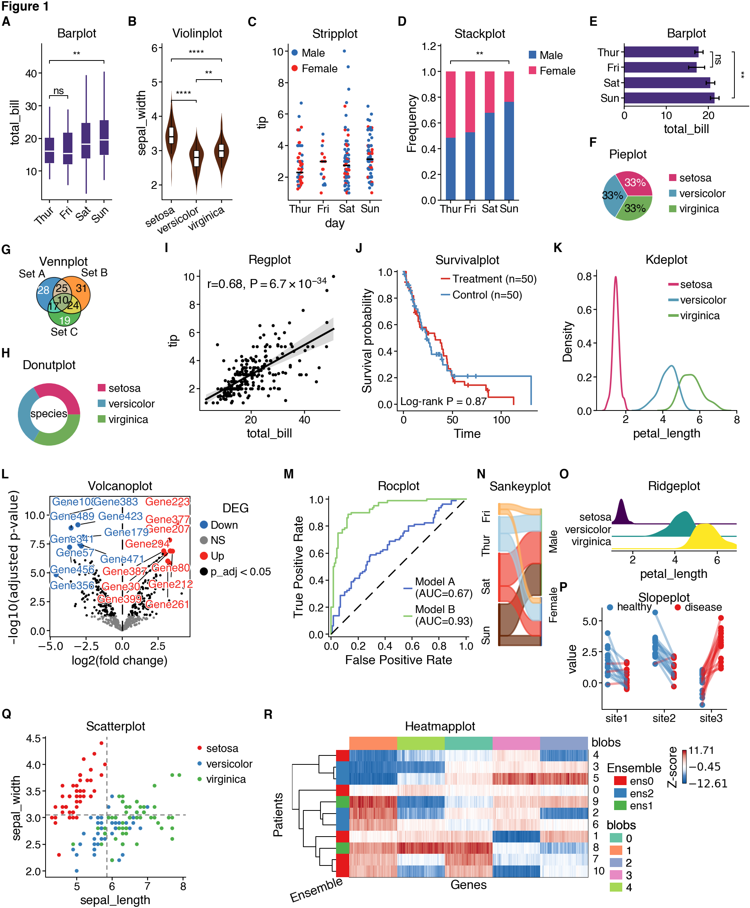
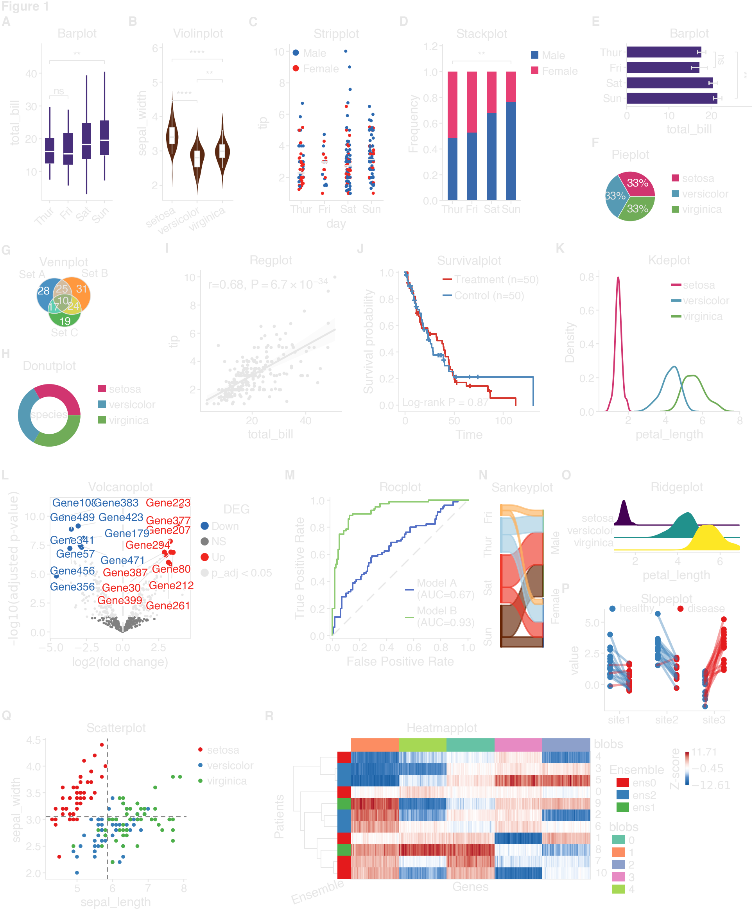
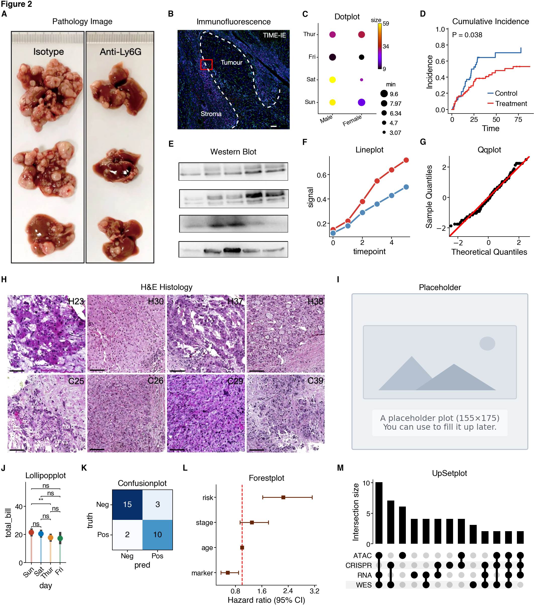
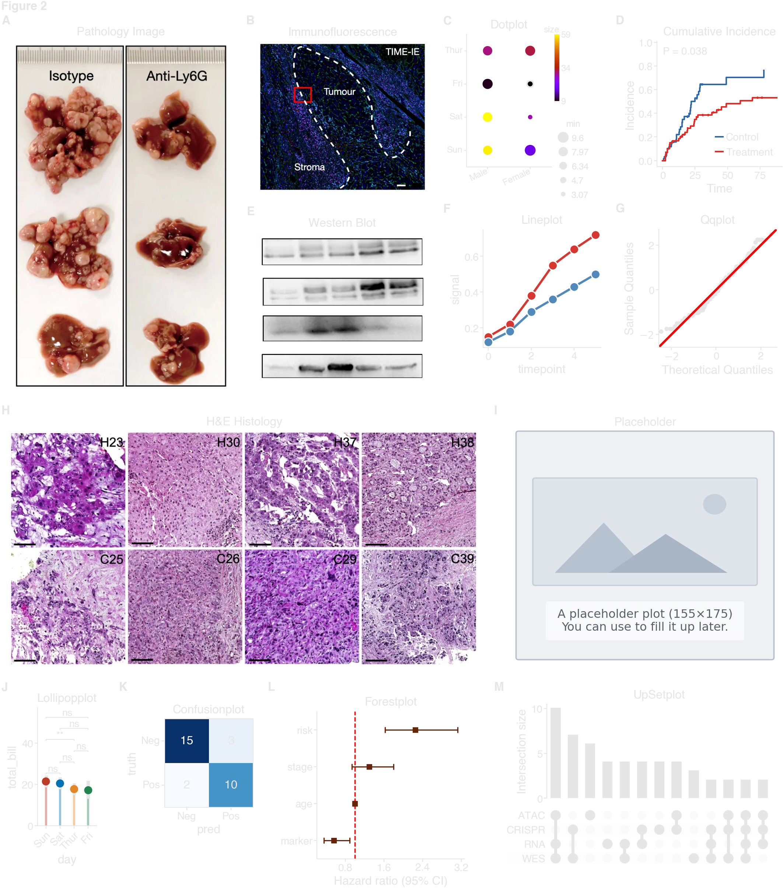

Note
Go to the end to download the full example code.
Showcase¶
Create the showcase figures used in the README and examples gallery.
These examples group the larger overview layouts separately from the focused per-feature examples in the rest of the gallery.
Load data¶
import os
from pathlib import Path
import matplotlib.image as mpimg
from scipy import stats
import cnsplots as cns
(
iris_df,
tips_df,
survival_df,
blobs,
volcano_df,
gene_sets,
roc_df,
slope_df,
confusion_df,
line_df,
cumulative_incidence_df,
forest_df,
upset_sets,
showcase_images,
) = cns.datasets.get_showcase_data(
include_showcase_images=True,
)
def _read_showcase_image(filename):
with (showcase_images / filename).open("rb") as image_file:
return mpimg.imread(image_file)
def _embed_detached_axes(host_ax, detached_axes, *, xpad=0.0, ypad=0.0):
detached_axes = [ax for ax in detached_axes if ax is not None]
if not detached_axes:
return
host_ax.set_axis_off()
host_box = host_ax.get_position().frozen()
detached_boxes = [ax.get_position().frozen() for ax in detached_axes]
left = min(box.x0 for box in detached_boxes)
right = max(box.x1 for box in detached_boxes)
bottom = min(box.y0 for box in detached_boxes)
top = max(box.y1 for box in detached_boxes)
width = max(right - left, 1e-9)
height = max(top - bottom, 1e-9)
inner_x0 = host_box.x0 + host_box.width * xpad
inner_y0 = host_box.y0 + host_box.height * ypad
inner_width = host_box.width * (1 - 2 * xpad)
inner_height = host_box.height * (1 - 2 * ypad)
for ax, box in zip(detached_axes, detached_boxes):
ax.set_position(
[
inner_x0 + inner_width * ((box.x0 - left) / width),
inner_y0 + inner_height * ((box.y0 - bottom) / height),
inner_width * (box.width / width),
inner_height * (box.height / height),
]
)
cns.utils._capture_detached_axes_layout(host_ax, detached_axes=detached_axes)
Figure 1¶
A comprehensive showcase of cnsplots capabilities for the README.
cns.settings.title_fontweight = "normal"
mp = cns.multipanel(
max_width=485, title="Figure 1", title_fontweight="bold", loc="left"
)
# Panel A: boxplot
mp.panel("A", 45, 100, color_cycle=[cns.VIOLET])
ax = cns.boxplot(
data=tips_df, x="day", y="total_bill", pairs=[("Thur", "Sun"), ("Thur", "Fri")]
)
ax.set_title("Barplot")
ax.set_xlabel("")
ax.set_xticklabels(
ax.get_xticklabels(), rotation=45, ha="right", rotation_mode="anchor"
)
# Panel B: violinplot
mp.panel("B", 45, 100, color_cycle=[cns.CHOCOLATE])
ax = cns.violinplot(data=iris_df, x="species", y="sepal_width", pairs="all")
ax.set_title("Violinplot")
ax.set_xlabel("")
ax.set_xticklabels(
ax.get_xticklabels(), rotation=30, ha="right", rotation_mode="anchor"
)
# Panel C: stripplot
mp.panel("C", 60, 100, color_cycle="BlueRed")
ax = cns.stripplot(data=tips_df, x="day", y="tip", hue="sex")
legend = ax.get_legend()
ax.legend(
handles=legend.legend_handles,
labels=[text.get_text() for text in legend.get_texts()],
title=legend.get_title().get_text(),
loc="upper left",
bbox_to_anchor=(-0.02, 1.0),
borderaxespad=0,
markerscale=1,
)
ax.set_title("Stripplot")
# Panel D: stackplot
mp.panel("D", 50, 100, color_cycle=cns.get_hexcolors_from_apalette([2, 4], "Bold"))
ax = cns.stackplot(data=tips_df, x="day", stack="sex", pairs=[("Thur", "Sun")])
ax.set_title("Stackplot")
ax.get_legend().set_title(None)
# Panel E: barplot
mp.panel("E", 80, 40, margin_left=35, margin_right=0, color_cycle=[cns.VIOLET])
ax = cns.barplot(
data=tips_df,
y="day",
x="total_bill",
errorbar="se",
width=0.7,
pairs=[("Thur", "Sun"), ("Thur", "Fri")],
)
ax.set_title("Barplot")
ax.set_ylabel("")
# Panel F: pieplot (stacked below E)
mp.panel(
"F",
40,
40,
margin_left=35,
margin_top=10,
margin_right=0,
below="E",
color_cycle="Ecotyper3",
)
ax = cns.pieplot(iris_df, "species", legend="right")
ax.set_title("Pieplot")
ax.get_legend().set_title(None)
# Panel G: vennplot
mp.panel("G", 40, 40, pad_left=55, margin_right=45, color_cycle="Tableau")
cns.vennplot(gene_sets, labels=("Set A", "Set B", "Set C"))
mp.get_axes("G").set_title("Vennplot")
# Panel H: donutplot
mp.panel("H", 50, 50, below="G", color_cycle="Ecotyper3")
ax = cns.donutplot(iris_df, "species", legend="right")
ax.set_title("Donutplot")
ax.get_legend().set_title(None)
# Panel I: regplot
mp.panel("I", 90, 90)
ax = cns.regplot(data=tips_df, x="total_bill", y="tip", s=1)
ax.set_title("Regplot")
# Panel J: survivalplot
mp.panel("J", 90, 90)
ax = cns.survivalplot(
data=survival_df,
duration="time",
event="event",
hue="group",
show_hazard_ratio=False,
)
# Keep the showcase annotation compact by dropping the CI from the HR line.
for text in ax.texts:
label = text.get_text()
if label.startswith("HR ="):
hr_line, sep, remainder = label.partition("\n")
text.set_text(
f"{hr_line.split(' (', 1)[0]}{sep}{remainder}" if sep else hr_line
)
break
ax.legend(loc="upper right", bbox_to_anchor=(1.03, 1.0), borderaxespad=0)
ax.set_title("Survivalplot")
# Panel K: kdeplot
mp.panel("K", 90, 90, color_cycle="Ecotyper3", margin_right=0)
ax = cns.kdeplot(data=iris_df, x="petal_length", hue="species")
ax.get_legend().set_title(None)
ax.set_title("Kdeplot")
# Panel L: volcanoplot
mp.panel("L", 90, 90, margin_right=60)
ax = cns.volcanoplot(volcano_df)
ax.set_title("Volcanoplot")
# Panel M: rocplot
mp.panel("M", 90, 90, margin_right=5, color_cycle="ECharts")
ax = cns.rocplot(roc_df, "label", ["Model A", "Model B"])
ax.legend(loc="lower right", bbox_to_anchor=(1.1, 0.0))
for text in ax.get_legend().get_texts():
text.set_text(text.get_text().replace(" (AUC=", "\n(AUC="))
text.set_multialignment("left")
ax.set_title("Rocplot")
# Panel N: sankeyplot
mp.panel("N", 30, 100, pad_left=-30, color_cycle="Ecotyper4")
ax = cns.sankeyplot(tips_df, x=["day", "sex"], label_rotation=90)
ax.set_title("Sankeyplot")
# Panel O: ridgeplot
mp.panel("O", 80, 35, pad_left=110, margin_right=0)
ax = cns.ridgeplot(data=iris_df, x="petal_length", y="species")
ax.set_title("Ridgeplot")
# Panel P: slopeplot
mp.panel("P", 80, 65, below="O", margin_top=10, pad_top=-5, margin_right=0)
ax = cns.slopeplot(data=slope_df, x="site", y="value", hue="label", pair="pair")
ax.set_title("Slopeplot")
# Panel Q: scatterplot
mp.panel(
"Q",
90,
90,
margin_right=50,
margin_top=-10,
margin_bottom=20,
color_cycle="Set1",
)
ax = cns.scatterplot(
data=iris_df, x="sepal_length", y="sepal_width", hue="species", s=5
)
ax.set_title("Scatterplot")
ax.get_legend().set_title(None)
ax.axhline(
y=iris_df["sepal_width"].mean(),
color="gray",
linestyle="--",
dashes=(4, 3),
linewidth=0.7,
)
ax.axvline(
x=iris_df["sepal_length"].mean(),
color="gray",
linestyle="--",
dashes=(4, 3),
linewidth=0.7,
)
cns.take_legend_out()
# Panel R: heatmapplot
mp.panel("R", 190, 90, margin_top=-10, margin_right=0)
cmp = cns.heatmapplot(
blobs,
label="Z-score",
cmap="BuRd_custom",
row_annotation=["Ensemble"],
col_annotation=["blobs"],
row_cluster=True,
col_cluster=True,
show_rownames=True,
show_colnames=False,
row_dendrogram=True,
xlabel="Genes",
ylabel="Patients",
legend_hpad=-1,
legend_vpad=0,
legend_hgap=3.5,
legend_vgap=0,
legend_width=3.0,
legend_order=["Ensemble", "blobs", "Z-score"],
xticklabels_rotation=20,
xlabel_labelpad=0,
)
cmp.ax.set_title("Heatmapplot")
# Save final figure
gallery_output_dir = Path(os.environ.get("CNSPLOTS_GALLERY_OUTPUT_DIR", "."))
gallery_output_dir.mkdir(parents=True, exist_ok=True)
cns.savefig(gallery_output_dir / "Figure1.svg")


/Users/runner/work/cnsplots/cnsplots/site-build/.sphinx-staging-lyc5nr0x/examples/showcase.py:97: UserWarning: set_ticklabels() should only be used with a fixed number of ticks, i.e. after set_ticks() or using a FixedLocator.
ax.set_xticklabels(
/Users/runner/work/cnsplots/cnsplots/site-build/.sphinx-staging-lyc5nr0x/examples/showcase.py:106: UserWarning: set_ticklabels() should only be used with a fixed number of ticks, i.e. after set_ticks() or using a FixedLocator.
ax.set_xticklabels(
/Users/runner/work/cnsplots/cnsplots/site-build/.sphinx-staging-lyc5nr0x/src/cnsplots/_svg.py:73: RuntimeWarning: MuPDF's `mutool` is unavailable; saved a standard matplotlib SVG instead.
_save_plain_svg(
Figure 2¶
A multipanel image layout sized directly from the source image dimensions.
mp = cns.multipanel(
max_width=540, title="Figure 2", title_fontweight="bold", loc="left"
)
detached_panel_layouts = []
# Panel A: load pathology image
ax = mp.panel("A", 149, 237, pad_left=-70)
ax.imshow(_read_showcase_image("image1.webp"))
ax.set_title("Pathology Image")
ax.set_axis_off()
# Panel B: load immunofluorescence image
ax = mp.panel("B", 116, 102, pad_left=-50)
ax.imshow(_read_showcase_image("image2.webp"))
ax.set_title("Immunofluorescence")
ax.set_axis_off()
# Panel C: dotplot
host_c = mp.panel("C", 80, 90, pad_top=20, pad_left=40, margin_right=20)
tips_minmax = tips_df.groupby(["day", "sex"]).agg({"total_bill": ["min", "size"]})
tips_minmax.columns = ["min", "size"]
tips_minmax = tips_minmax.reset_index()
dp = cns.dotplot(
tips_minmax,
x="sex",
y="day",
color="size",
size="min",
value="size",
legend=True,
legend_width=10,
legend_hpad=0,
legend_vgap=0,
xlabel="",
ylabel="",
xticklabels_rotation=25,
xticklabels_fontsize=6,
yticklabels_fontsize=6,
max_s=40,
ax=host_c,
)
hm_ax = dp.hm_ax
for label in hm_ax.get_xticklabels():
label.set_ha("right")
label.set_rotation_mode("anchor")
dp.ax_heatmap.set_title("")
hm_ax.set_title("Dotplot")
dp.dot_legend.get_title().set_fontsize(6)
for text in dp.dot_legend.get_texts():
text.set_fontsize(6)
dp.cbar_ax.tick_params(labelsize=6, length=0)
dp.cbar_ax.set_title("size", fontsize=6, pad=1, loc="right")
dp.cbar_ax.set_ylabel("")
# Panel D: cumulativeincidenceplot
ax = mp.panel("D", 85, 85, margin_right=0, color_cycle="BlueRed")
ax = cns.cumulativeincidenceplot(
data=cumulative_incidence_df,
duration="time",
event="event",
hue="group",
hue_order=["Control", "Treatment"],
pvalue_position=(0, 0.9),
show_risk_table=False,
)
legend = ax.get_legend()
legend.set_loc("lower right")
if legend is not None:
legend.set_title(None)
for text in legend.get_texts():
text.set_text(text.get_text().split(" (", 1)[0])
ax.set_xlabel("Time")
ax.set_ylabel("Incidence")
ax.set_title("Cumulative Incidence")
# Panel E: load western blot image
ax = mp.panel("E", 116, 102, below="B", pad_left=-50)
ax.imshow(_read_showcase_image("image4.webp"))
ax.set_title("Western Blot")
ax.set_axis_off()
# Panel F: lineplot
ax = mp.panel("F", 80, 80, below="C", margin_top=15)
ax = cns.lineplot(
data=line_df,
x="timepoint",
y="signal",
hue="condition",
marker="o",
errorbar=None,
)
legend = ax.get_legend()
if legend is not None:
legend.remove()
ax.set_title("Lineplot")
# Panel G: qqplot
ax = mp.panel("G", 80, 80, below="D", margin_top=15, margin_right=0)
ax = cns.qqplot(iris_df, x="sepal_length", dist=stats.norm, fit=True, line="45")
ax.set_title("Qqplot")
mp.newline()
# Panel H: h&e histology image
ax = mp.panel("H", 319, 160, pad_left=-60)
ax.imshow(_read_showcase_image("image3.webp"))
ax.set_title("H&E Histology")
ax.set_axis_off()
# Panel I: placeholder plot
ax = mp.panel("I", 175, 155, margin_right=0)
cns.placeholderplot("A placeholder plot (155⨯175)\nYou can use to fill it up later.")
ax.set_title("Placeholder")
mp.newline()
# Panel J: lollipopplot
ax = mp.panel("J", 40, 80, color_cycle="NEJM", margin_right=15, margin_bottom=20)
ax = cns.lollipopplot(data=tips_df, x="day", y="total_bill", pairs="all")
ax.set_title("Lollipopplot")
ax.set_xticklabels(
ax.get_xticklabels(), rotation=45, ha="right", rotation_mode="anchor"
)
# Panel K: confusionplot
ax = mp.panel("K", 60, 60, pad_top=30, margin_right=10)
ax = cns.confusionplot(
data=confusion_df,
x="pred",
y="truth",
add_pvalue=False,
x_order=["Neg", "Pos"],
y_order=["Neg", "Pos"],
cmap="Blues",
# pvalue_x_pad=-0.3,
# pvalue_y_pad=3.8,
)
ax.set_title("Confusionplot")
# Panel L: forestplot
host_l = mp.panel(
"L", 100, 100, color_cycle=[cns.CHOCOLATE], pad_left=15, pad_top=10, margin_right=20
)
forest_model = cns.methods.CoxModel(
data=forest_df,
duration="time",
event="event",
variates=[
"age",
"C(risk, levels=['Low', 'High'])",
"C(stage, levels=['I', 'II'])",
"np.log(marker)",
],
)
forest_model.fit()
forest_ax = cns.forestplot(forest_model, add_pvalue=False, ax=host_l)
forest_ax.set_title("Forestplot")
# Panel M: upsetplot
host_m = mp.panel("M", 200, 120, margin_right=0, pad_left=-100, pad_top=10)
upset_axes = cns.upsetplot(
upset_sets,
fig=mp.fig,
sort_by="cardinality",
totals_plot_elements=0,
facecolor="black",
show_counts=False,
)
upset_axes["intersections"].set_title("UpSetplot")
detached_panel_layouts.append((host_m, list(upset_axes.values()), 0.03, 0.04))
for host_ax, detached_axes, xpad, ypad in detached_panel_layouts:
_embed_detached_axes(host_ax, detached_axes, xpad=xpad, ypad=ypad)
if mp.fig is not None:
mp.fig.canvas.draw()
# Save final figure
cns.savefig(gallery_output_dir / "Figure2.svg")


/Users/runner/work/cnsplots/cnsplots/site-build/.sphinx-staging-lyc5nr0x/examples/showcase.py:318: FutureWarning: The default of observed=False is deprecated and will be changed to True in a future version of pandas. Pass observed=False to retain current behavior or observed=True to adopt the future default and silence this warning.
tips_minmax = tips_df.groupby(["day", "sex"]).agg({"total_bill": ["min", "size"]})
/Users/runner/work/cnsplots/cnsplots/.venv/lib/python3.11/site-packages/PyComplexHeatmap/dotHeatmap.py:365: FutureWarning: The default value of observed=False is deprecated and will change to observed=True in a future version of pandas. Specify observed=False to silence this warning and retain the current behavior
data2d = data.pivot_table(
/Users/runner/work/cnsplots/cnsplots/.venv/lib/python3.11/site-packages/PyComplexHeatmap/dotHeatmap.py:365: FutureWarning: The provided callable <function mean at 0x104606480> is currently using DataFrameGroupBy.mean. In a future version of pandas, the provided callable will be used directly. To keep current behavior pass the string "mean" instead.
data2d = data.pivot_table(
/Users/runner/work/cnsplots/cnsplots/.venv/lib/python3.11/site-packages/PyComplexHeatmap/dotHeatmap.py:384: FutureWarning: The default value of observed=False is deprecated and will change to observed=True in a future version of pandas. Specify observed=False to silence this warning and retain the current behavior
self.kwargs["s"] = data.pivot_table(
/Users/runner/work/cnsplots/cnsplots/.venv/lib/python3.11/site-packages/PyComplexHeatmap/dotHeatmap.py:384: FutureWarning: The provided callable <function mean at 0x104606480> is currently using DataFrameGroupBy.mean. In a future version of pandas, the provided callable will be used directly. To keep current behavior pass the string "mean" instead.
self.kwargs["s"] = data.pivot_table(
/Users/runner/work/cnsplots/cnsplots/.venv/lib/python3.11/site-packages/PyComplexHeatmap/dotHeatmap.py:401: FutureWarning: DataFrame.applymap has been deprecated. Use DataFrame.map instead.
self.kwargs["s"]=self.kwargs["s"].applymap(lambda x:(x-self.smin)/delta)
/Users/runner/work/cnsplots/cnsplots/.venv/lib/python3.11/site-packages/PyComplexHeatmap/dotHeatmap.py:415: FutureWarning: The default value of observed=False is deprecated and will change to observed=True in a future version of pandas. Specify observed=False to silence this warning and retain the current behavior
self.kwargs["c"] = data.pivot_table(
/Users/runner/work/cnsplots/cnsplots/.venv/lib/python3.11/site-packages/PyComplexHeatmap/dotHeatmap.py:415: FutureWarning: The provided callable <function mean at 0x104606480> is currently using DataFrameGroupBy.mean. In a future version of pandas, the provided callable will be used directly. To keep current behavior pass the string "mean" instead.
self.kwargs["c"] = data.pivot_table(
/Users/runner/work/cnsplots/cnsplots/site-build/.sphinx-staging-lyc5nr0x/src/cnsplots/plots/_categorical.py:588: FutureWarning: The default of observed=False is deprecated and will be changed to True in a future version of pandas. Pass observed=False to retain current behavior or observed=True to adopt the future default and silence this warning.
grouped = data.groupby(cat_col, sort=False)[val_col]
/Users/runner/work/cnsplots/cnsplots/.venv/lib/python3.11/site-packages/statannotations/Annotator.py:560: UserWarning: Glyph 10799 (\N{VECTOR OR CROSS PRODUCT}) missing from font(s) Helvetica.
plt.draw()
/Users/runner/work/cnsplots/cnsplots/site-build/.sphinx-staging-lyc5nr0x/src/cnsplots/_multipanels.py:710: UserWarning: Glyph 10799 (\N{VECTOR OR CROSS PRODUCT}) missing from font(s) Helvetica.
canvas.draw()
/Users/runner/work/cnsplots/cnsplots/.venv/lib/python3.11/site-packages/statannotations/Annotator.py:560: UserWarning: Glyph 10799 (\N{VECTOR OR CROSS PRODUCT}) missing from font(s) Helvetica.
plt.draw()
/Users/runner/work/cnsplots/cnsplots/site-build/.sphinx-staging-lyc5nr0x/src/cnsplots/_multipanels.py:710: UserWarning: Glyph 10799 (\N{VECTOR OR CROSS PRODUCT}) missing from font(s) Helvetica.
canvas.draw()
/Users/runner/work/cnsplots/cnsplots/.venv/lib/python3.11/site-packages/statannotations/Annotator.py:560: UserWarning: Glyph 10799 (\N{VECTOR OR CROSS PRODUCT}) missing from font(s) Helvetica.
plt.draw()
/Users/runner/work/cnsplots/cnsplots/site-build/.sphinx-staging-lyc5nr0x/src/cnsplots/_multipanels.py:710: UserWarning: Glyph 10799 (\N{VECTOR OR CROSS PRODUCT}) missing from font(s) Helvetica.
canvas.draw()
/Users/runner/work/cnsplots/cnsplots/.venv/lib/python3.11/site-packages/statannotations/Annotator.py:560: UserWarning: Glyph 10799 (\N{VECTOR OR CROSS PRODUCT}) missing from font(s) Helvetica.
plt.draw()
/Users/runner/work/cnsplots/cnsplots/site-build/.sphinx-staging-lyc5nr0x/src/cnsplots/_multipanels.py:710: UserWarning: Glyph 10799 (\N{VECTOR OR CROSS PRODUCT}) missing from font(s) Helvetica.
canvas.draw()
/Users/runner/work/cnsplots/cnsplots/.venv/lib/python3.11/site-packages/statannotations/Annotator.py:560: UserWarning: Glyph 10799 (\N{VECTOR OR CROSS PRODUCT}) missing from font(s) Helvetica.
plt.draw()
/Users/runner/work/cnsplots/cnsplots/site-build/.sphinx-staging-lyc5nr0x/src/cnsplots/_multipanels.py:710: UserWarning: Glyph 10799 (\N{VECTOR OR CROSS PRODUCT}) missing from font(s) Helvetica.
canvas.draw()
/Users/runner/work/cnsplots/cnsplots/.venv/lib/python3.11/site-packages/statannotations/Annotator.py:560: UserWarning: Glyph 10799 (\N{VECTOR OR CROSS PRODUCT}) missing from font(s) Helvetica.
plt.draw()
/Users/runner/work/cnsplots/cnsplots/site-build/.sphinx-staging-lyc5nr0x/src/cnsplots/_multipanels.py:710: UserWarning: Glyph 10799 (\N{VECTOR OR CROSS PRODUCT}) missing from font(s) Helvetica.
canvas.draw()
/Users/runner/work/cnsplots/cnsplots/.venv/lib/python3.11/site-packages/upsetplot/data.py:303: FutureWarning: Downcasting object dtype arrays on .fillna, .ffill, .bfill is deprecated and will change in a future version. Call result.infer_objects(copy=False) instead. To opt-in to the future behavior, set `pd.set_option('future.no_silent_downcasting', True)`
df.fillna(False, inplace=True)
/Users/runner/work/cnsplots/cnsplots/.venv/lib/python3.11/site-packages/upsetplot/plotting.py:795: FutureWarning: A value is trying to be set on a copy of a DataFrame or Series through chained assignment using an inplace method.
The behavior will change in pandas 3.0. This inplace method will never work because the intermediate object on which we are setting values always behaves as a copy.
For example, when doing 'df[col].method(value, inplace=True)', try using 'df.method({col: value}, inplace=True)' or df[col] = df[col].method(value) instead, to perform the operation inplace on the original object.
styles["linewidth"].fillna(1, inplace=True)
/Users/runner/work/cnsplots/cnsplots/.venv/lib/python3.11/site-packages/upsetplot/plotting.py:796: FutureWarning: A value is trying to be set on a copy of a DataFrame or Series through chained assignment using an inplace method.
The behavior will change in pandas 3.0. This inplace method will never work because the intermediate object on which we are setting values always behaves as a copy.
For example, when doing 'df[col].method(value, inplace=True)', try using 'df.method({col: value}, inplace=True)' or df[col] = df[col].method(value) instead, to perform the operation inplace on the original object.
styles["facecolor"].fillna(self._facecolor, inplace=True)
/Users/runner/work/cnsplots/cnsplots/.venv/lib/python3.11/site-packages/upsetplot/plotting.py:797: FutureWarning: A value is trying to be set on a copy of a DataFrame or Series through chained assignment using an inplace method.
The behavior will change in pandas 3.0. This inplace method will never work because the intermediate object on which we are setting values always behaves as a copy.
For example, when doing 'df[col].method(value, inplace=True)', try using 'df.method({col: value}, inplace=True)' or df[col] = df[col].method(value) instead, to perform the operation inplace on the original object.
styles["edgecolor"].fillna(styles["facecolor"], inplace=True)
/Users/runner/work/cnsplots/cnsplots/.venv/lib/python3.11/site-packages/upsetplot/plotting.py:798: FutureWarning: A value is trying to be set on a copy of a DataFrame or Series through chained assignment using an inplace method.
The behavior will change in pandas 3.0. This inplace method will never work because the intermediate object on which we are setting values always behaves as a copy.
For example, when doing 'df[col].method(value, inplace=True)', try using 'df.method({col: value}, inplace=True)' or df[col] = df[col].method(value) instead, to perform the operation inplace on the original object.
styles["linestyle"].fillna("solid", inplace=True)
/Users/runner/work/cnsplots/cnsplots/site-build/.sphinx-staging-lyc5nr0x/examples/showcase.py:473: UserWarning: Glyph 10799 (\N{VECTOR OR CROSS PRODUCT}) missing from font(s) Helvetica.
mp.fig.canvas.draw()
/Users/runner/work/cnsplots/cnsplots/site-build/.sphinx-staging-lyc5nr0x/src/cnsplots/_multipanels.py:710: UserWarning: Glyph 10799 (\N{VECTOR OR CROSS PRODUCT}) missing from font(s) Helvetica.
canvas.draw()
/Users/runner/work/cnsplots/cnsplots/site-build/.sphinx-staging-lyc5nr0x/src/cnsplots/_svg.py:73: RuntimeWarning: MuPDF's `mutool` is unavailable; saved a standard matplotlib SVG instead.
_save_plain_svg(
Total running time of the script: (0 minutes 41.663 seconds)